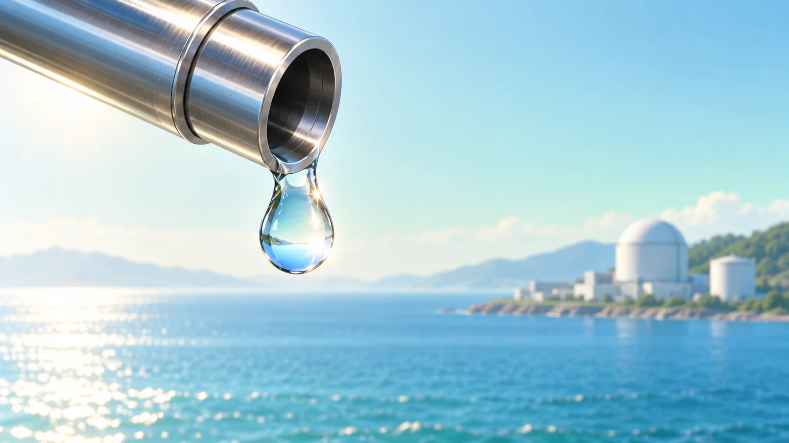
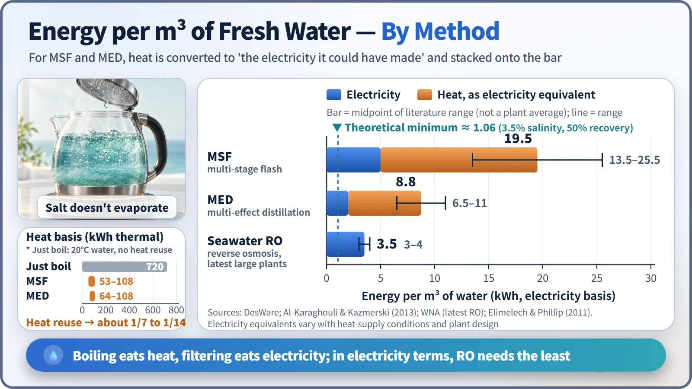
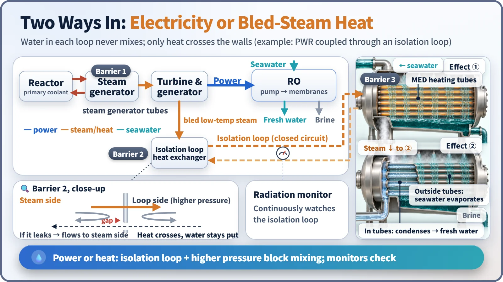

Society, Environment & the Future · 282
Why the Drops on a Kettle Lid Aren't Salty — Nuclear Desalination and Reactor Heat
Boiling methods use heat, reverse osmosis uses electricity, and a reactor can supply both while only energy crosses over.

Nuclear desalination uses a reactor's electricity or its low-temperature heat to turn seawater into fresh water. Boiling methods (MSF, MED) consume heat, membrane filtering (reverse osmosis) consumes electricity, and a reactor can supply both. Only energy crosses over: the reactor's coolant never becomes drinking water. [1]
Why the drops on a kettle lid aren't salty
Lift the lid of a boiling kettle and the underside is beaded with clear droplets. If the kettle had been full of seawater, those droplets still wouldn't taste salty. Water turns to vapor and rises, but salt can't go with it, so the salt stays behind. That is the oldest principle of desalination. Now imagine the flame under that kettle is a nuclear reactor.
How much energy does it take to boil the sea?
Heating 1 cubic meter of water (1,000 liters, roughly a family of four's daily use) from 20°C and boiling all of it away takes about 720 kilowatt-hours (kWh) of heat, well over a typical household's monthly electricity use.
Real plants recycle heat. When vapor condenses it gives off heat, and the plant uses that heat to warm the seawater in the next chamber, like a stack of steamer baskets where the steam from one basket cooks the next. Reusing condensation heat over many stages cuts the heat needed to about 53–108 kWh per cubic meter, between one-seventh and one-fourteenth of plain boiling.
MSF (multi-stage flash) sends hot seawater through chambers at progressively lower pressure, where part of it suddenly boils off, using heat at roughly 90–120°C. MED (multi-effect distillation) lets the steam from one chamber (an "effect") boil the seawater in the next, and runs on lukewarm heat of around 70°C. [2]
Filtering instead of boiling: reverse osmosis
Reverse osmosis (RO) pushes seawater at high pressure against a membrane that only water molecules can pass. Overcoming seawater's osmotic pressure takes about 55 to 80 times atmospheric pressure, so RO runs on electricity for its high-pressure pumps. The latest large plants need about 3–4 kWh per cubic meter. [1]

"Tens of kWh" for the thermal methods sounds terribly inefficient, but heat at 70°C is low-grade heat for making power. Counted as the electricity it could have produced, MSF comes to roughly 13.5–25.5 kWh and MED to about 6.5–11 kWh, depending on how the heat is drawn off. RO still uses the least on this basis, but where spare heat is nearly free, thermal methods can compete. [2]
| Method | Main energy | Energy per m³ |
|---|---|---|
| Plain boiling, no heat reuse | Heat | about 720 kWh (heat) |
| MSF (multi-stage flash) | Heat at about 90–120°C + pumps | 53–108 kWh heat; 13.5–25.5 kWh electricity equivalent |
| MED (multi-effect distillation) | Heat at about 70°C + a little electricity | 64–108 kWh heat; 6.5–11 kWh electricity equivalent |
| Seawater RO (latest large plants) | Electricity | about 3–4 kWh |
| Theoretical minimum (3.5% salinity, 50% recovery) | — | about 1.06 kWh |
The minimum energy physics allows for separating salt from seawater is about 1.06 kWh per cubic meter (3.5% salinity, recovering half the water). No method can go below that. [3]
Two ways a reactor can help
With electricity. The plant's power runs the RO pumps. To the desalination plant the reactor is just another power supplier, the simplest option.
With heat. Steam does work as it passes through the turbine, and some of it can be drawn off partway. That lower-temperature steam, having already done most of its work, is bled off to heat an MED or MSF unit. Electrical output drops a little, but the plant now makes both electricity and water: cogeneration.

The reactor's cooling water does not become drinking water. Between the primary coolant and the desalination unit sit the steam generator and a separate intermediate isolation loop, and only heat crosses the walls. The isolation loop is kept at a higher pressure than the plant-side steam, so if that boundary ever leaked, water would flow toward the power plant, not toward the desalination side, and radiation monitors watch it continuously. Nor is this the same as a plant drawing seawater for cooling: cooling water just warms up and returns to the sea. [4]
Has anyone actually done this?
The World Nuclear Association counts more than 150 reactor-years of nuclear desalination experience (one reactor running for one year is one reactor-year). [1]
BN-350, Aktau, Kazakhstan. For about 27 years, from 1973 to 1999, it supplied up to 135 megawatts of electricity along with about 80,000 tonnes of drinking water a day for a desert coastal city.
Japan's pressurized water reactor sites. About ten sites, including Ohi, Takahama, Ikata and Genkai, have made the water their plants need from seawater, about 14,000 tonnes a day in total.
South Korea's SMART. A small reactor developed in South Korea, aimed from the design stage at producing electricity and desalinated water together. An improved design developed jointly with Saudi Arabia (SMART100) received standard design approval in 2024, but no desalination plant has yet been built and operated with it. [5]
A nuclear plant does not make water free: the cost depends heavily on the site, interest rates and fuel costs. The IAEA's free DEEP tool compares the production cost of a cubic meter of water for energy sources such as nuclear and fossil fuels combined with MSF, MED or RO. And disposing of the concentrated brine is a challenge for every desalination plant, whatever its energy source. [6]
Key takeaways
Seawater is either boiled so only the vapor is collected (MSF, MED) or filtered through a membrane (RO). Boiling consumes heat; filtering consumes electricity. A reactor can supply both, and it can turn lukewarm heat left over from power generation into water, while isolation loops, pressure differences and monitoring keep the reactor's water and drinking water apart.